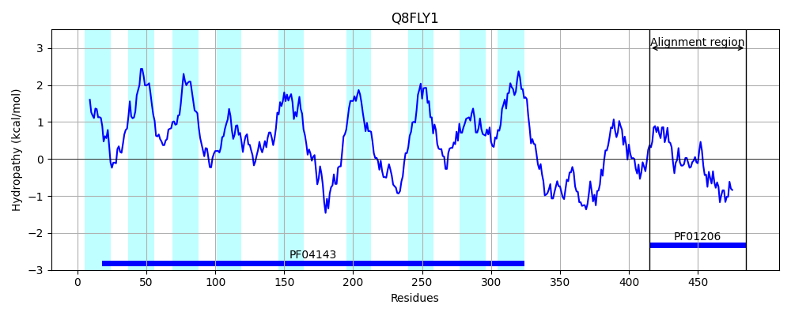
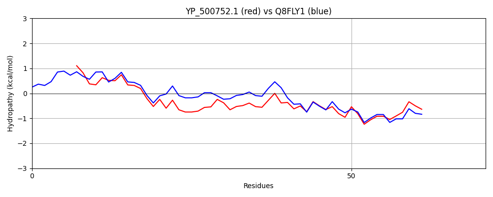

Hit Accession: Q8FLY1
Hit TCID: 9.B.102.1.12
Hit Description: gnl|BL_ORD_ID|16172 gnl|TC-DB|Q8FLY1|9.B.102.1.12 Uncharacterized protein OS=Corynebacterium efficiens (strain DSM 44549 / YS-314 / AJ 12310 / JCM 11189 / NBRC 100395) GN=HMPREF0290_0137 PE=4 SV=1
Mach Len: 71
e:0.000000
Query TMS Count : 0
Hit TMS Count: 9
TMS-Overlap Score: 0.000000
Predicted Substrates:CHEBI:9350;polysulfur
BLAST Alignment:
| Protein Hydropathy Plots: | |
|---|---|
|  | |
Pairwise Alignment-Hydropathy Plot: | |
|  | |